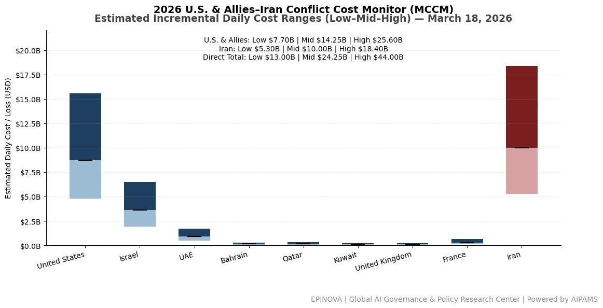
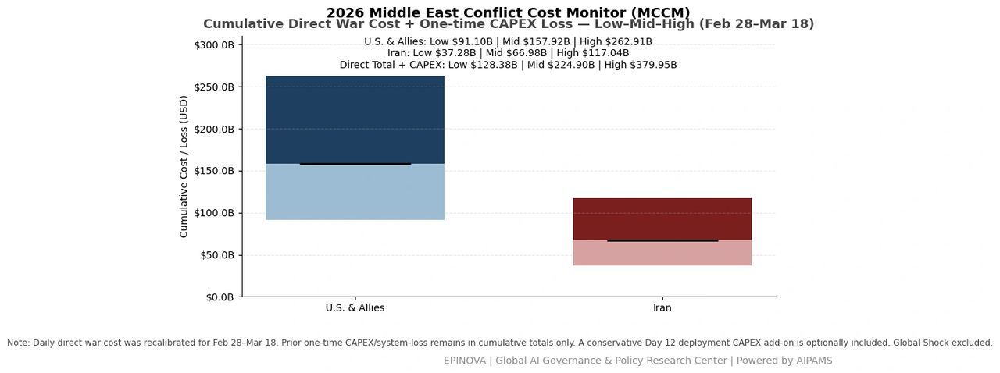
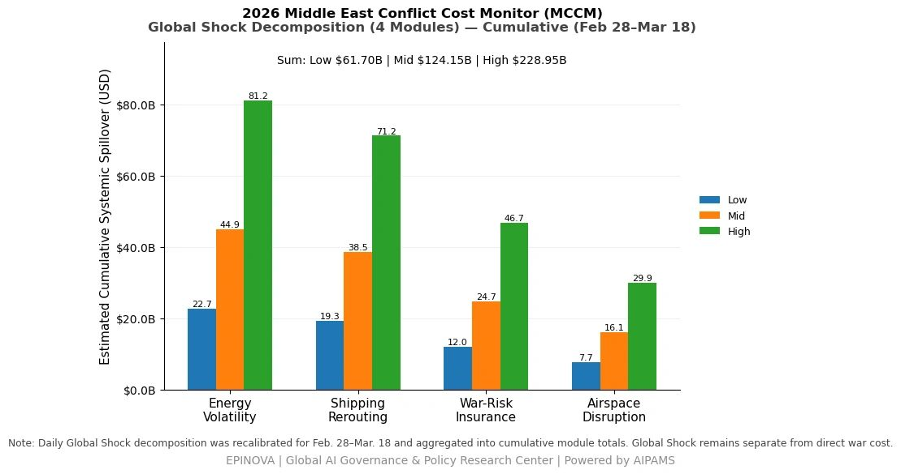
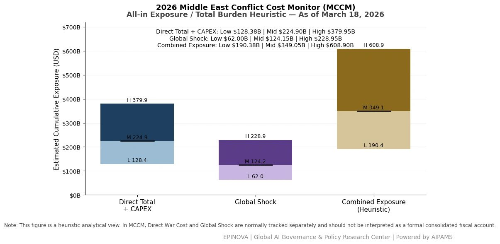

2026 U.S. & Allies–Iran Conflict Cost Monitor (MCCM): March 18
Powered by AIPAMS
1. Introduction
The 2026 Middle East Conflict Cost Monitor (MCCM) provides an event-driven, scenario-based assessment of daily conflict-related expenditures and losses across major state actors involved in the crisis. Using a structured low–mid–high estimation framework, the series aggregates publicly available operational indicators, force posture changes, strike intensity proxies, reported material damage, and infrastructure disruptions to produce comparable daily cost ranges.
The MCCM framework distinguishes between three analytical components:
(1) Direct War Cost, which includes military operational expenditures, asset losses, and selected capital losses (CAPEX);
(2) Infrastructure and energy-sector disruption costs linked to conflict operations; and
(3) Systemic market spillovers (“Global Shock”), which capture broader economic and logistical externalities associated with regional escalation.
Direct war costs and systemic spillovers are reported separately to maintain analytical clarity between conflict-specific expenditures and wider economic effects.
MCCM is designed as a rolling monitoring instrument rather than a definitive accounting ledger. Estimates are produced using scenario-bounded ranges intended to support comparative analysis and policy discussion rather than precise fiscal accounting. All values are expressed in current U.S. dollars (USD) and may be revised retroactively as verification improves and additional information becomes available.




2. Methodological Notes
A. Scenario Ranges.
All estimates are presented as bounded ranges.
- Low: Minimum confirmed observable losses.
- Mid: Most probable estimate based on publicly available reporting and operational cost parameters.
- High: Upper-bound scenario incorporating reported but not independently verified high-value asset losses.
B. Daily Estimates.
Reported figures represent incremental 24-hour estimates of conflict-related costs and losses.
C. Cumulative Totals.
Cumulative values reflect the aggregation of daily scenario ranges over the reporting period. High-range values may include scenario-based adjustments for reported strategic asset losses pending independent verification.
D. Global Shock.
Global Shock represents systemic economic spillovers generated by the conflict and is reported separately from direct military costs. It is decomposed into four modules:
- Energy Volatility
- Shipping Rerouting
- War-Risk Insurance Premiums
- Airspace Disruption
These modules capture major economic and logistical externalities associated with regional escalation.
E. Combined Exposure (Heuristic).
In selected figures, Direct War Cost and Global Shock may be displayed together as a Combined Exposure heuristic to illustrate the approximate scale of total economic exposure associated with the conflict. This aggregation is analytical only and should not be interpreted as a formal consolidated fiscal account.
F. Revision Policy.
All MCCM estimates are derived from open-source reporting and model-based reconstruction and remain subject to revision as verification improves.
Selected References:
Reuters. (2026, March 18).
Israel says it killed Hamas logistics commander in Gaza strike.
https://www.reuters.com/world/middle-east/israel-says-it-killed-hamas-logistics-commander-gaza-strike-2026-03-18/
Reuters. (2026, March 18).
Iran vows retaliation after strikes on energy facilities.
https://www.reuters.com/world/middle-east/iran-vows-retaliation-after-strikes-energy-sites-2026-03-18/
Reuters. (2026, March 18).
Projectile hits UAE base hosting foreign forces, no casualties reported.
https://www.reuters.com/world/middle-east/projectile-hits-uae-base-hosting-foreign-forces-2026-03-18/
Associated Press. (2026, March 18).
Israeli airstrikes hit Hezbollah targets in Lebanon after cross-border attacks.
https://apnews.com/article/israel-lebanon-hezbollah-airstrikes-2026-03-18
Associated Press. (2026, March 18).
Rising Israel-Iran tensions raise fears of wider regional war.
https://apnews.com/article/israel-iran-conflict-escalation-2026-03-18
Al Jazeera. (2026, March 18).
Iran threatens Gulf oil infrastructure after Israeli strikes.
https://www.aljazeera.com/news/2026/3/18/iran-threatens-gulf-oil-sites-after-israel-strikes
Al Jazeera. (2026, March 18).
Israel expands strikes on Hezbollah in Lebanon.
https://www.aljazeera.com/news/2026/3/18/israel-strikes-hezbollah-lebanon-escalation
BBC News. (2026, March 18).
Israel and Iran tensions escalate after fresh strikes.
https://www.bbc.com/news/world-middle-east-68543210
BBC News. (2026, March 18).
Australian base in UAE hit amid regional escalation.
https://www.bbc.com/news/world-australia-68544722
CNN. (2026, March 18).
US moves to stabilize energy markets amid Middle East escalation.
https://www.cnn.com/2026/03/18/politics/us-energy-response-middle-east/index.html
CNN. (2026, March 18).
Trump authorizes temporary Jones Act waiver to ease energy transport.
https://www.cnn.com/2026/03/18/politics/jones-act-waiver-energy/index.html
The New York Times. (2026, March 18).
Israel-Iran conflict intensifies with strikes on infrastructure.
https://www.nytimes.com/2026/03/18/world/middleeast/israel-iran-strikes-energy.html
The Washington Post. (2026, March 18).
Gulf tensions threaten global oil supply chains.
https://www.washingtonpost.com/world/2026/03/18/gulf-oil-supply-conflict/
Financial Times. (2026, March 18).
Energy markets react to renewed Middle East hostilities.
https://www.ft.com/content/3c7b9a4e-8f0a-4c2b-9b7e-2b1d7e5f9abc
Bloomberg. (2026, March 18).
Oil surges as Middle East conflict threatens supply routes.
https://www.bloomberg.com/news/articles/2026-03-18/oil-surges-middle-east-conflict-threatens-supply
U.S. Department of Defense. (2026, March 18).
CENTCOM update on operations in Middle East.
https://www.defense.gov/News/Releases/Release/Article/3712456/centcom-update-march-18-2026/
Israel Defense Forces. (2026, March 18).
IDF operational update: Gaza, Iran and regional threats.
https://www.idf.il/en/mini-sites/israel-at-war/march-18-2026-update/
Islamic Republic News Agency (IRNA). (2026, March 18).
Iran warns of retaliation after attacks on energy facilities.
https://en.irna.ir/news/85234567/Iran-warns-retaliation-energy-facilities
Ministry of National Defense of China. (2026, March 18).
PLA Southern Theater Command expels Philippine aircraft near Huangyan Dao.
http://www.mod.gov.cn/action/2026-03/18/content_4901234.htm
South China Sea Strategic Situation Probing Initiative. (2026, March 18).
Report on Huangyan Island airspace incident.
http://www.scspi.org/en/nd.jsp?id=482
Share this post: